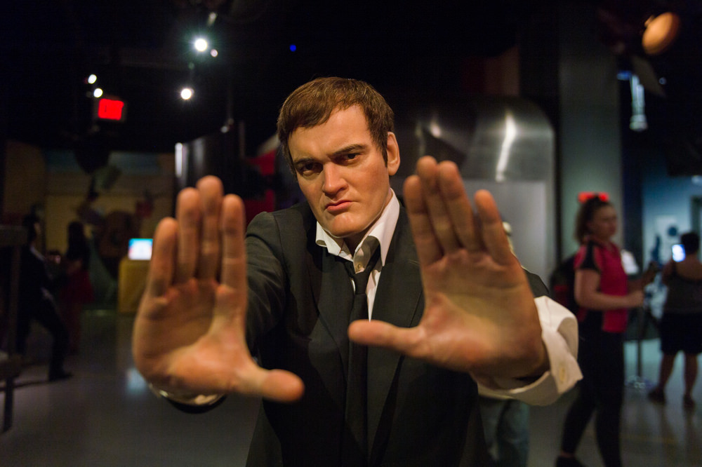

Quentin Tarantino

De fã para fã: Quentin Tarantino me mostrou que o cinema não precisa ser certinho, comportado ou seguir as cartilhas tradicionais de Hollywood. Ele me ensinou que existe um jeito totalmente diferente, livre e autoral de contar histórias — onde os diálogos ditam o ritmo, a trilha sonora rouba a cena e as regras existem para serem quebradas. Esta página é o meu tributo a essa genialidade caótica. Um espaço para quem, assim como eu, entendeu que fazer cinema é, acima de tudo, ter a coragem de ser autêntico. Conheça a seguir a trajetória do diretor que mudou a nossa forma de assistir a um filme."Quando as pessoas me perguntam se eu fiz faculdade de cinema, eu digo: 'Não, eu fui aos filmes'"
Antes de se tornar um dos diretores mais influentes e reverenciados da história do cinema, Quentin Jerome Tarantino era apenas um jovem obstinado, nascido em Knoxville, Tennessee, em 1963. Ele não frequentou grandes escolas de cinema; sua verdadeira faculdade foi a Video Archives, uma icônica locadora de fitas VHS na Califórnia onde trabalhou durante os anos 1980. Lá, ele passou anos assistindo, analisando e absorvendo todo tipo de filme imaginável — de produções de arte europeias a filmes B de artes marciais e faroestes espaguete. Em 1992, Tarantino chocou o mundo com sua estreia em Cães de Aluguel (Reservoir Dogs). Com um orçamento minúsculo, o filme redefiniu o gênero policial ao focar não no assalto em si, mas no comportamento, na paranoia e nos diálogos mundanos e brilhantes dos criminosos antes e depois do crime. Duas décadas antes do streaming, ele provou que o roteiro ainda era o elemento mais poderoso de uma tela. Dois anos depois, consolidou seu nome no topo da cultura pop com Pulp Fiction: Tempo de Violência (1994). O longa que quebrou a estrutura narrativa tradicional, levou a Palma de Ouro em Cannes, faturou o Oscar de Melhor Roteiro Original e se tornou um fenômeno cultural imutável. O selo "Um Filme de Quentin Tarantino" tornou-se sinônimo de uma experiência cinematográfica única. Seja acompanhando a jornada sangrenta da Noiva em Kill Bill, a reescrita audaciosa da história em Bastardos Inglórios e Era uma Vez em... Hollywood, ou o ritmo claustrofóbico de Os Oito Odiados, sua assinatura é inconfundível. Caracterizado por trilhas sonoras impecáveis garimpadas de sua própria coleção de discos, ângulos de câmera ousados (como o famoso trunk shot, a câmera de dentro do porta-malas) e uma paixão visceral pela película, Tarantino não apenas faz filmes: ele celebra a própria existência do cinema. Com a promessa de se aposentar após o seu décimo longa-metragem, ele já garantiu seu lugar no panteão dos deuses da sétima arte, deixando um legado inestimável que continua a inspirar gerações de cinéfilos ao redor do mundo.